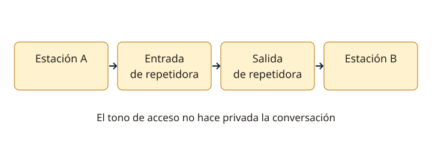

Lección 16 de 16
Operación, alfabeto fonético, repetidoras y CW
Practica una comunicación ordenada y entiende los reportes y abreviaturas que aparecen en el banco oficial.
Escuchar, preguntar y llamar
Antes de transmitir, comprueba que tu licencia permita la frecuencia, el modo y el uso de la estación. Escucha y pregunta si la frecuencia está ocupada. En fonía, una llamada general usa CQ y tu indicativo completo; después deja tiempo para una respuesta. En una conversación ya iniciada espera una pausa e identifícate. Si surge interferencia, coordina una solución con respeto; ocupar más ancho o subir potencia no crea un derecho sobre la frecuencia.
Alfabeto fonético internacional
Las letras se deletrean Alfa, Bravo, Charlie, Delta, Echo, Foxtrot, Golf, Hotel, India, Juliett, Kilo, Lima, Mike, November, Oscar, Papa, Quebec, Romeo, Sierra, Tango, Uniform, Victor, Whiskey, X-ray, Yankee y Zulu. Su finalidad es evitar confusiones, especialmente con señales débiles. Usa el indicativo autorizado: las prácticas de pronunciación del curso pueden hacerse sin activar el transmisor. Las palabras improvisadas pueden resultar menos comprensibles para otros operadores.

RST y lectura de señal
RST significa legibilidad, fuerza e intensidad/calidad del tono telegráfico: R suele ir de 1 a 5, S de 1 a 9 y T de 1 a 9. En fonía se usa normalmente RS. Un 5/7 significa buena legibilidad y una fuerza indicada como 7; no son 57 vatios. “S9 más 20 dB” indica un nivel por encima de la referencia S9 del equipo, con sus límites de calibración. Un reporte debe describir lo que recibes, no ser una felicitación automática.
Repetidoras y tonos
Una repetidora recibe en una frecuencia y retransmite en otra para facilitar cobertura. Configura frecuencia de salida que escucharás, desplazamiento y frecuencia de entrada donde transmitirás. CTCSS o DCS permiten abrir determinados accesos o silenciar audio; no cifran ni hacen privado el canal. Escucha primero, deja pausas para otras estaciones y evita activar repetidamente sin identificarte. El temporizador limita transmisiones continuas: su corte no demuestra que tu batería se agotó.
CW y abreviaturas
En Morse, punto y raya tienen una proporción temporal: raya = tres puntos; entre elementos de una letra, un punto; entre letras, tres; entre palabras, siete. CQ es llamada general; DE indica “de”; K invita a transmitir; R acusa recepción; SK señala final de contacto; 73 expresa saludos; DX se refiere a distancia. QRS pide transmitir más despacio y QSL confirma recepción. Un oscilador de práctica permite aprender ritmo sin transmitir RF.
Preparar y cerrar el contacto
Comprueba volumen, modo, ancho, potencia, antena y alimentación antes de llamar. En SSB usa niveles de micrófono y procesamiento que no distorsionen; en FM evita sobredesviación. Un plan de banda organiza usos recomendados, pero no reemplaza las atribuciones ni las condiciones de tu licencia. Anota el contacto en tu libro de guardia con fecha, hora y zona horaria entendidas. Al cerrar, identifica tu estación y deja el canal disponible.
Resuelve paso a paso
Leer un acceso a repetidora
Ejemplo de configuración, no una frecuencia autorizada: si escuchas en una salida y el desplazamiento es −600 kHz, la entrada está 0,600 MHz más abajo. Verifica siempre los datos reales y las facultades de tu licencia antes de transmitir.
Ritmo Morse
La letra A es punto–raya (·−), B es raya–punto–punto–punto (−···) y K es raya–punto–raya (−·−). Practica el sonido y la separación, no solo la imagen escrita.
Comprueba lo aprendido: ¿Un tono CTCSS impide que otras personas escuchen la conversación?
No. Controla el acceso o apertura de audio en equipos configurados; la transmisión sigue siendo recibible en el canal.
Preguntas oficiales de este tema
Selecciona una alternativa y pulsa «Comprobar respuesta». Si fallas, podrás ver la respuesta correcta para seguir aprendiendo. Las preguntas con incidencias documentales se muestran solo para consulta y no se califican.
Continúa tu recorrido
Fuentes de estudio: programas técnicos y banco SUBTEL, apéndices A–E, versión 06/12/2020, y sus solucionarios oficiales. Reglamentación: Decreto 523, versión 21/06/2013; evaluación: Resolución Exenta 2620/2023. Revisión documental: 11/11/2026. Explicaciones, cálculos y esquemas didácticos de RUFCOM. Consultar documentos oficiales.